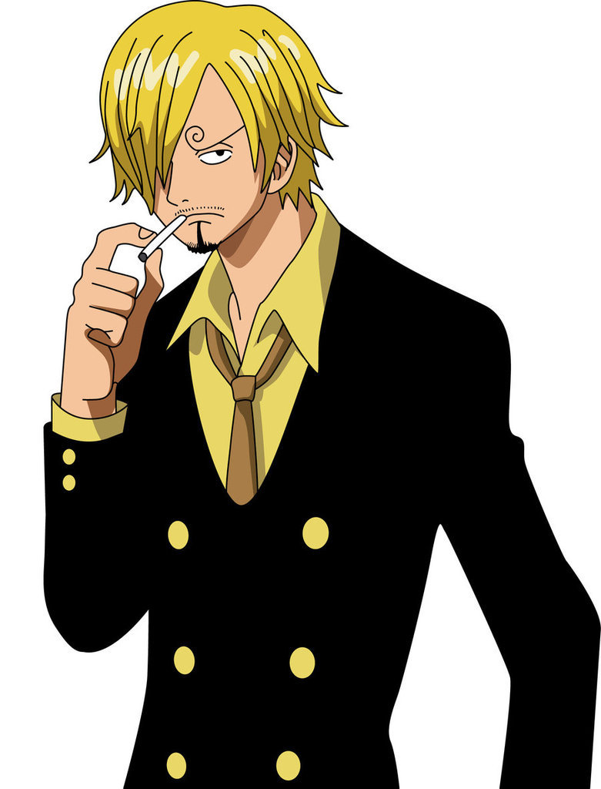
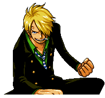
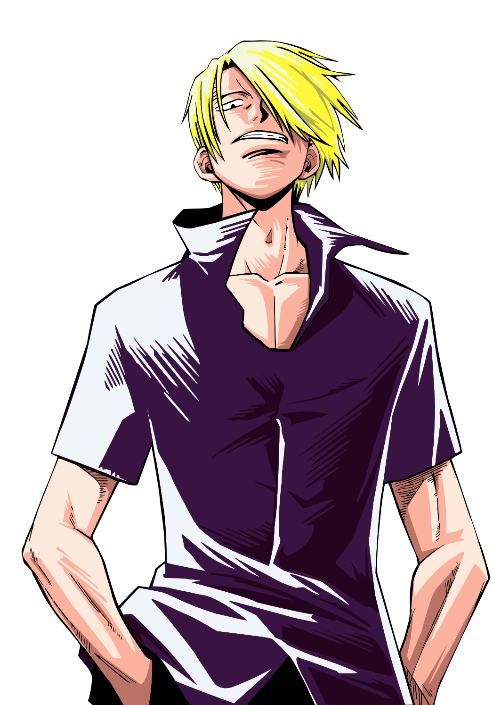
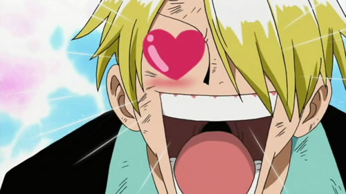
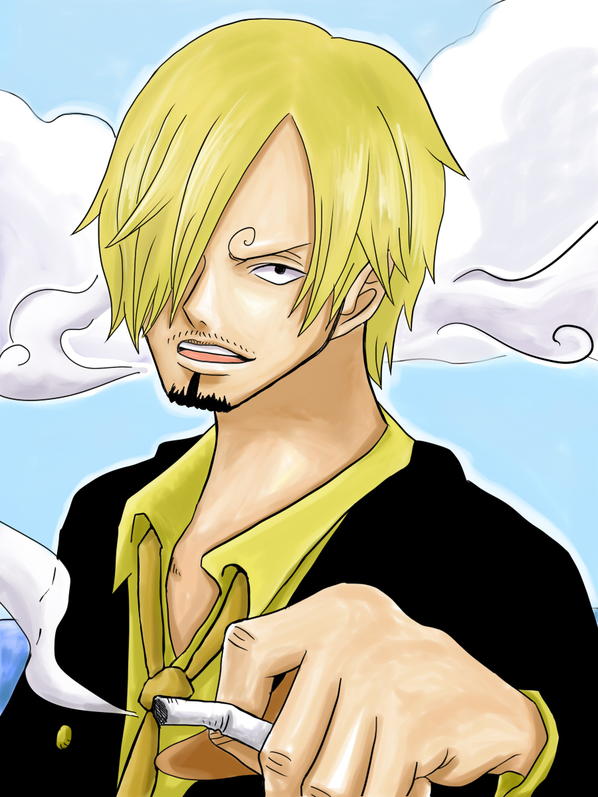
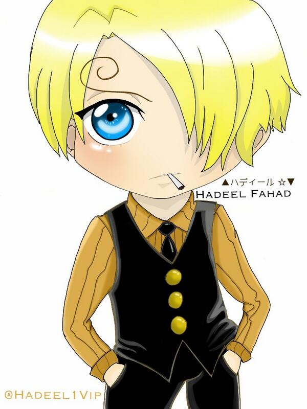

Vinsmoke Sanji[8], most commonly known by his moniker "Black Leg" Sanji,[1] is a pirate and the cook of the Straw Hat Pirates, the former sous chef of Baratie, and the third son of the Vinsmoke Family,[9] making him a prince of the Germa Kingdom. He is officially the fifth member of the crew and the fourth to join, doing so at the end of the Baratie Arc. Since he was born in North Blue, he is the first Straw Hat not to originate from East Blue. He is one of the Monster Trio in the crew alongside Luffy and Zoro. His dream is to find the rumored All Blue, which is where East Blue, West Blue, North Blue, and South Blue meet along with their wildlife, a chef's paradise. He has a bounty of Beli177,000,000, which is only valid if captured alive,[10] per the request of his father.[11]
|  |
|
 |  |
|
|
 |  |  |